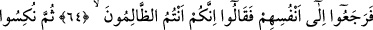
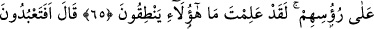
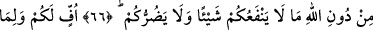
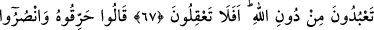
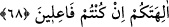
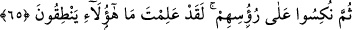
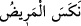
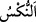

SİZ AKILLANMAZ MISINIZ?
64. Bunun üzerine, kendi vicdanlarına dönüp (kendi kendilerine) “Zâlimler
sizlersiniz, sizler!” dediler.
65. Sonra tekrar eski inanç ve tartışmalarına döndüler: “Sen bunların
konuşmadığını pek âlâ biliyorsun.” dediler.
66. İbrahim dedi ki: “Öyleyse, Allâh’ı bırakıp da, size hiçbir fayda ve zarar
vermeyen bir şeye hâla tapacak mısınız?
67. Size de, Allâh’ı bırakıp tapmakta olduğunuz şeylere de yuh olsun! Siz
akıllanmaz mısınız?”
“Bunun üzerine, kendi vicdanlarına dönüp” yâni akıllılarına müracaat ettiler.
Düşündüler ki kendisine gelen kötülüğü bertaraf edemeyenin ve kendisini kırana hiçbir
şekilde zarar vermeye muktedir olamayanın, başkalarına bir fayda sağlaması ya da
gelebilecek bir zararı uzaklaştırması imkânsızdır. Böylesi nasıl mâbûd olmayı hak
eder?!
Kendi aralarında birbirlerine: “Aslında bunları kırmakla değil, bunlara tapmakla
“Zâlimler sizlersiniz, sizler!” dediler.”
65. Sonra tekrar eski inanç ve tartışmalarına döndüler: “Sen bunların
konuşmadığını pek âlâ biliyorsun.” dediler.
“Sonra tekrar eski inanç ve tartışmalarına döndüler:” yâni kendi vicdanlarına
dönüp doğru yolu bulduktan sonra tekrar hak ile mücâdeleye giriştiler. Onların bâtıla
dönüşü, bir şeyin altının üstüne gelmesine benzetildi. Nitekim hasta âfiyete erdikten
sonra tekrar önceki hastalığına dönerse “__WORD__ denir. “__WORD__ bir şeyi ters
çevirmek, sonunu başına döndürmektir.